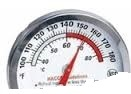

|
A thermometer is a device that measures temperature.
And it has a temperature sensor and some scaled. Nowadays, Thermometers are used in
many application such as industrial application, in the determination of weather,
in medicine, in scientific research, etc. On the market, you will find a different kind of thermometer, here in our case we made a simple on where we used a temperature sensor and a servo motor to have the temperature value and scale it with servo motor angle which is determined depending on the temperature mesured from the sensor.Which is the 180 degrees of the servo motor will correspond to 100°C of temperature value mesured from the sensor. Elements: -One Temperature Sensor" lm35 " -One Arduino Uno -One Servo Moter -6 Wires Circuit: See the image down Download the code here See the youtube video here, do not forget to subscribe for more video. Thanks! For more detail about thermometer project, see my publication about it here  |
© 2020 BAKARY TRAORE
Tel : +48572510430
Tel & Whatsap: +905396799391
Email : traoreb956@gmail.com